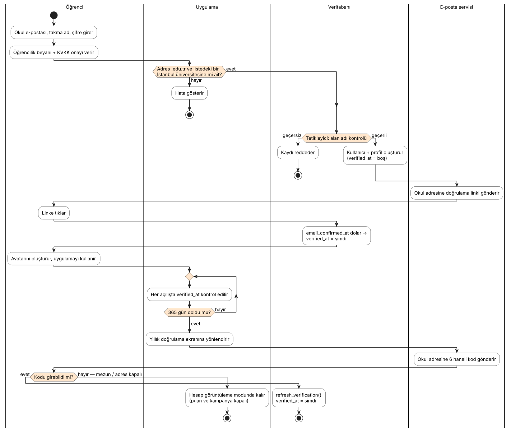

UĞRAK
Yazılım Gereksinim Analizi
İstanbul’daki üniversite öğrencileri için mekan puanlama ve öğrenci kampanyası platformu
İçindekiler
- Giriş — amaç, kapsam, tanımlar
- Genel tanım — problem, çözüm, aktörler, kısıtlar, varsayımlar
- Use case diyagramları ve senaryolar
- Kullanıcı hikayeleri ve kabul kriterleri
- İşlevsel gereksinimler
- İşlevsel olmayan gereksinimler
- KVKK ve kişisel verilerin korunması
- Veri modeli ve backend mimarisi
- Riskler, kısıtlar ve açık konular
- Sürüm kapsamı (V1 ve sonrası)
- Ekler — ekran listesi, teknoloji yığını, izlenebilirlik
1. Giriş
1.1 Amaç
Bu belge, Uğrak uygulamasının ilk sürümünün (V1) ve sonraki sürümlerde eklenecek özelliklerin gereksinimlerini tanımlar. Belge; ders hocasına sunulmak, ekip içinde ortak bir referans oluşturmak ve geliştirme ile test sürecinde kabul kriterlerini belirlemek amacıyla hazırlanmıştır.
1.2 Kapsam
Uğrak, yalnızca İstanbul’daki üniversitelerin aktif öğrencilerinin, üniversitenin verdiği .edu.tr e-posta adresiyle kayıt olabildiği bir platformdur. Öğrenciler kampüs çevresindeki kafe, restoran ve çalışma mekanlarını öğrenciye özel dört kriterle (fiyat, ders çalışmaya uygunluk, porsiyon, ortam) puanlar; mekanlar ise yalnızca doğrulanmış öğrencilerin kullanabildiği tek kullanımlık kampanya kodları sunar.
Uygulama tek kod tabanıyla web, Android ve iOS’ta çalışacak şekilde geliştirilmektedir. V1 web uygulaması olarak sunulur.
V1’de çalışır durumda olanlar: okul e-postasıyla kayıt ve giriş, doğrulama maili, yıllık yeniden doğrulama, KVKK onayı, basit pixel avatar, mekan listesi ve detayı, 4 kriterli puan ve yorum, favoriler, kampanya kodu (QR + 6 hane), PostgreSQL veritabanı, güvenlik kuralları (RLS).
V1’de taslak (örnek veri) olanlar: mekan paneli, admin paneli.
Sonraki sürümler: harita, forum, bildirimler, misafir ve mezun rolleri, mekan verisinin dış kaynaktan çekilmesi.
1.3 Tanımlar ve kısaltmalar
| Terim | Açıklama |
|---|
| Doğrulanmış öğrenci | Okul e-posta adresine gönderilen linke tıklamış ve son doğrulamasının üzerinden 365 gün geçmemiş kullanıcı. |
| Yıllık yeniden doğrulama | Doğrulama süresi dolan kullanıcının, okul adresine gelen 6 haneli kodla öğrenciliğini yenilemesi. |
| Kampanya kodu | Öğrencinin bir kampanya için aldığı, 10 dakika geçerli, tek kullanımlık 6 karakterli kod ve QR karşılığı. |
| Kriter puanı | Fiyat/performans, ders çalışmaya uygunluk (priz, wifi, sessizlik), porsiyon ve ortam için 1–5 arası puan. |
| Mekan sahibi | Uğrak ekibiyle anlaşıp hesabı ekip tarafından açılan, kendi mekanının kampanyalarını yöneten kullanıcı. |
| Admin | Uğrak ekibi; mekan başvurularını, mekan hesaplarını ve üniversite alan adı listesini yönetir. |
| RLS | Row Level Security — PostgreSQL’in satır düzeyinde erişim kuralları. Kullanıcının hangi satırı okuyup yazabileceğini veritabanı belirler. |
| OTP | One-Time Password — tek kullanımlık doğrulama kodu. |
| KVKK | 6698 sayılı Kişisel Verilerin Korunması Kanunu. |
| MoSCoW | Önceliklendirme: Must (olmazsa olmaz), Should (olmalı), Could (olabilir), Won’t (bu sürümde yok). |
| Demo modu | Supabase bağlantısı tanımlı değilken uygulamanın veriyi tarayıcıda tuttuğu ve doğrulama maillerini uygulama içinde gösterdiği sunum modu. |
1.4 Referanslar
- 6698 sayılı Kişisel Verilerin Korunması Kanunu ve Aydınlatma Yükümlülüğünün Yerine Getirilmesinde Uyulacak Usul ve Esaslar Hakkında Tebliğ
- Supabase dokümantasyonu — Auth, Row Level Security, Database Functions
- Expo / Expo Router dokümantasyonu (SDK 58)
- Proje kaynak kodu:
supabase/schema.sql, src/
2. Genel tanım
2.1 Problem
- Genel puanlama uygulamalarındaki puanlar öğrencinin ihtiyacını yansıtmaz: “Ders çalışılır mı, priz var mı, öğrenci bütçesine uygun mu?” sorularının cevabı tek bir yıldız puanında kaybolur.
- Yorumların kim tarafından yazıldığı belirsizdir; sahte ve reklam amaçlı yorumlar güveni düşürür.
- Kampüs çevresindeki mekanların öğrencilere ulaşabileceği, öğrenciye özel ve suistimal edilemeyen bir kampanya kanalı yoktur. “Öğrenci indirimi” çoğu zaman kimlik kartına bakılarak elle uygulanır.
2.2 Çözüm ve ürün perspektifi
Uğrak, kaydı yalnızca okul e-posta adresiyle mümkün kılarak her yorumun gerçek bir öğrenciden geldiğini garanti eder. Puanlama öğrenciye özel dört kritere ayrılır. Mekanlar, doğrulanmış öğrencilere tek kullanımlık ve kısa süreli kodlarla kampanya sunar. Platform; öğrenci uygulaması (web + mobil), mekan paneli (web) ve yönetim panelinden oluşur ve tek bir Supabase (PostgreSQL) backend’i paylaşır.
2.3 Aktörler ve kullanıcı sınıfları
| Aktör | Tanım ve yetkiler | Sürüm |
|---|
| Öğrenci | İstanbul’daki bir üniversitenin okul e-postasıyla kayıt olmuş ve doğrulanmış kullanıcı. Mekanları görür, puan ve yorum yazar, favori ekler, kampanya kodu alır. | V1 |
| Doğrulaması dolmuş kullanıcı | Son doğrulamasının üzerinden 365 gün geçmiş öğrenci. Yeniden doğrulayana kadar puan veremez ve kampanya kodu alamaz; yeniden doğrulama ekranına yönlendirilir. | V1 |
| Mekan sahibi | Uğrak ekibiyle iletişime geçip anlaşan mekanın yetkilisi. Hesabı ekip açar. Kendi mekanının kampanyalarını yönetir, öğrenci kodlarını doğrular, istatistikleri görür. | V1 taslak V2 canlı |
| Admin | Uğrak ekibi. Mekan başvurularını ve hesaplarını, üniversite alan adı listesini ve şikayetleri yönetir. | V1 taslak V2 canlı |
| E-posta servisi (sistem) | Supabase Auth. Doğrulama linkini ve yıllık doğrulama kodunu öğrencinin okul adresine gönderir. | V1 |
| Misafir | Okul e-postası olmayan kullanıcı. Mekanları görüntüleyebilir; puan, kampanya ve forum kapalıdır. Kararı sonraki sürüme ertelendi. | Sonraki |
| Mezun | Okul e-postası mezuniyet sonrası kapanabildiği için ayrı bir doğrulama yöntemi gerektirir. Kararı sonraki sürüme ertelendi. V1’de yeniden doğrulaması tutmayan hesap görüntüleme modunda kalır. | Sonraki |
2.4 Çalışma ortamı
- İstemci: Güncel Chrome, Safari, Firefox, Edge (masaüstü ve mobil tarayıcı). Aynı kod Expo Go / derlenmiş uygulama ile Android 10+ ve iOS 16+ cihazlarda çalışır.
- Sunucu: Supabase (yönetilen PostgreSQL, Auth, REST API). Uygulamaya özel ayrı bir sunucu yoktur; iş kuralları veritabanı fonksiyonları, tetikleyiciler ve RLS ile uygulanır.
- Barındırma: Web derlemesi statik dosya olarak herhangi bir statik barındırıcıda (Netlify, Vercel vb.) yayınlanabilir.
2.5 Tasarım ve uygulama kısıtları
- Kayıt yalnızca
.edu.tr uzantılı ve sistemdeki İstanbul üniversiteleri listesinde yer alan alan adlarıyla yapılabilir.
- Uygulama arayüzü Türkçedir; tarih ve saatler Türkiye saatine göre gösterilir.
- Öğrenci tarafı mobil öncelikli tasarlanır (480 px genişlik hedefi); paneller masaüstü öncelikli tasarlanır.
- Görsel kimlik: retro-pixel tarz. Avatar ve arayüz özgün çizimdir; başka oyunların çizimleri kullanılmaz (telif).
- Backend olarak Supabase / PostgreSQL kullanılır; ders kapsamında başka bir backend zorunluluğu yoktur.
- Mekan verisi ekip tarafından elle girilmez; V1’de örnek veri kullanılır, ileride mekan başvuruları ve dış kaynak (ör. Google Places) üzerinden gelir.
2.6 Varsayımlar ve bağımlılıklar
- Her öğrencinin üniversitesi tarafından verilmiş, erişebildiği bir e-posta adresi vardır.
- Okul e-posta adresine erişebilmek, o adresin sahibinin aktif öğrenci olduğu anlamına gelir. (Personel istisnası için bkz. Bölüm 9.)
- Supabase’in e-posta gönderim servisi (veya bağlanacak SMTP servisi) okul mail sunucularına teslimat yapabilir.
- Mekan sahipleri kampanya kodunu kasada kontrol etmeyi ve öğrenci kimlik kartına bakmayı kabul eder.
3. Use case diyagramları ve senaryolar
Bu bölümde sistemin aktörlerle etkileşimi dört diyagramla gösterilmiş, ardından kritik use case’ler senaryo tablolarıyla ayrıntılandırılmıştır. Use case’lerin tamamının listesi Bölüm 3.5’tedir.

Şekil 5 — Kayıt ve yıllık doğrulama akışı (etkinlik diyagramı)
3.1 UC-01 Kayıt ol
UC-01 · Kayıt ol
| Aktör | Öğrenci (birincil), E-posta servisi (ikincil) |
| Ön koşul | Kullanıcının oturumu yok; üniversitesinin verdiği e-posta adresine erişimi var. |
| Ana akış |
- Öğrenci “Kayıt ol” ekranını açar.
- Takma ad, okul e-postası, şifre ve şifre tekrarını girer.
- Sistem e-posta adresini yazarken kontrol eder ve eşleşen üniversiteyi ve kampüsü gösterir.
- Öğrenci “aktif öğrenciyim” beyanını ve KVKK aydınlatma metni onayını işaretler.
- “Kayıt ol”a basar. Sistem alan adını veritabanında tekrar kontrol eder, hesabı ve profili oluşturur.
- E-posta servisi okul adresine doğrulama linki gönderir; öğrenci “Mailini kontrol et” ekranına yönlendirilir.
|
| Alternatif akışlar |
3a. Adres .edu.tr ile bitmiyor → “Sadece üniversitenin verdiği .edu.tr adresiyle kayıt olunabilir.”
3b. Alan adı listedeki İstanbul üniversitelerinden birine ait değil → “Uğrak şimdilik sadece İstanbul’da.”
4a. Beyan veya KVKK onayı eksik → ilgili alan altında hata gösterilir.
5a. Şifre 8 karakterden kısa veya tekrar eşleşmiyor → alan hatası.
5b. Adres zaten kayıtlı → “Bu e-posta ile zaten bir hesap var.”
5c. İstek doğrudan API’ye gönderilse bile veritabanı tetikleyicisi geçersiz alan adını reddeder.
|
| Son koşul | Doğrulanmamış bir hesap ve profil oluşur (verified_at boş); KVKK onay zamanı kaydedilir. |
3.2 UC-02 E-posta adresini doğrula · UC-04 Yıllık yeniden doğrula
UC-02 · E-posta adresini doğrula
| Aktör | Öğrenci, E-posta servisi |
| Ön koşul | UC-01 tamamlanmış, doğrulama maili gönderilmiş. |
| Ana akış |
- Öğrenci okul mail kutusunu açar ve “Uğrak — Öğrenci adresini doğrula” mailindeki linke tıklar.
- Sistem e-posta onay zamanını kaydeder, profildeki
verified_at alanını doldurur ve oturumu açar.
- İlk girişte öğrenci avatar oluşturucuya (UC-06), ardından Keşfet ekranına yönlendirilir.
|
| Alternatif akışlar | 1a. Mail gelmedi → “Maili tekrar gönder” (60 saniye bekleme süresiyle).
1b. Öğrenci doğrulamadan giriş yapmaya çalışır → “E-posta adresin henüz doğrulanmamış” uyarısı ve doğrulama ekranına geçiş. |
| Son koşul | Kullanıcı 365 gün boyunca doğrulanmış öğrencidir. |
UC-04 · Yıllık yeniden doğrula
| Aktör | Doğrulaması dolmuş kullanıcı, E-posta servisi |
| Ön koşul | Kullanıcının oturumu açık; son doğrulamasının üzerinden 365 gün geçmiş. |
| Ana akış |
- Uygulama açılışta doğrulama süresini kontrol eder ve kullanıcıyı “Yıllık doğrulama” ekranına yönlendirir.
- Kullanıcı “Kod gönder”e basar; okul adresine 6 haneli kod gönderilir.
- Kullanıcı kodu girer. Sistem kodu doğrular ve
refresh_verification() fonksiyonuyla doğrulama tarihini yeniler.
- Kullanıcı uygulamaya döner.
|
| Alternatif akışlar | 3a. Kod hatalı veya süresi dolmuş → “Kod hatalı ya da süresi dolmuş.” · 3b. Kullanıcı okul mailine erişemiyor (mezuniyet vb.) → hesap görüntüleme modunda kalır; puan verme ve kampanya kodu kapalıdır. |
| Son koşul | verified_at güncellenir, yeni 365 günlük süre başlar. |
3.3 UC-09 Puan ver ve yorum yaz
UC-09 · 4 kriterle puan ver ve yorum yaz
| Aktör | Doğrulanmış öğrenci |
| Ön koşul | Oturum açık ve doğrulama süresi geçerli; öğrenci bir mekanın detay sayfasında. |
| Ana akış |
- Öğrenci “Puan ver” kartında dört kriterin her birine 1–5 arası puan seçer.
- İsteğe bağlı en fazla 500 karakterlik yorum yazar ve “Gönder”e basar.
- Sistem doğrulama süresini kontrol eder, yorumu kaydeder; mekanın kriter ortalamaları ve yorum sayısı güncellenir.
- Yorum, takma ad, avatar ve üniversite kısaltmasıyla yorum listesinde görünür.
|
| Alternatif akışlar | 1a. Bir kriter boş bırakılmış → “Dört kriterin hepsine puan ver.” · 3a. Öğrencinin bu mekana yorumu zaten var → mevcut yorum güncellenir (UC-10). · 3b. Doğrulama süresi dolmuş → işlem veritabanında RLS tarafından reddedilir ve kullanıcı bilgilendirilir. |
| Son koşul | Kullanıcı başına mekan başına tek yorum bulunur (UNIQUE(user_id, venue_id)). |
3.4 UC-12 Kampanya kodu al · UC-15 Öğrenci kodunu doğrula
UC-12 · Kampanya kodu al
| Aktör | Doğrulanmış öğrenci |
| Ön koşul | Kampanya aktif ve tarih aralığında; öğrencinin doğrulaması geçerli. |
| Ana akış |
- Öğrenci mekan detayında veya Kampanyalar sekmesinde “Kodu al”a basar.
- Sistem
create_redemption() ile 6 karakterli, benzersiz, 10 dakika geçerli bir kod üretir.
- Ekranda QR, kod ve geri sayım gösterilir. Öğrenci kasada kodu öğrenci kimlik kartıyla birlikte gösterir.
|
| Alternatif akışlar | 2a. Aynı kampanya için süresi dolmamış, kullanılmamış kod varsa yeni kod üretilmez, mevcut kod gösterilir. · 2b. Kampanya bitmiş → “Kampanya aktif değil.” · 3a. Süre dolar → kod “Süresi doldu” olarak gösterilir, öğrenci yeniden kod alabilir. |
| Son koşul | redemptions tablosunda kullanılmamış bir kod kaydı oluşur. |
UC-15 · Öğrenci kodunu doğrula (mekan paneli — V1 taslak, V2 canlı)
| Aktör | Mekan sahibi |
| Ön koşul | Mekan sahibi panele giriş yapmış; öğrenci kodunu göstermiş. |
| Ana akış |
- Mekan sahibi kodu panele girer (V2: kamerayla QR okutur).
- Sistem
redeem_code() ile kodun bu mekana ait, süresi dolmamış ve kullanılmamış olduğunu kontrol eder.
- Kod “kullanıldı” olarak işaretlenir; panelde kampanya adıyla birlikte “Geçerli” sonucu gösterilir.
|
| Alternatif akışlar | 2a. Kod başka mekana ait / bulunamadı · 2b. Kod daha önce kullanılmış · 2c. Süresi dolmuş → ilgili hata gösterilir. |
| Son koşul | Kod bir daha kullanılamaz. Mekan, öğrencinin kimliğini görmez. |
3.5 Use case listesi
| No | Use case | Aktör | Öncelik | Sürüm |
|---|
| UC-01 | Kayıt ol (edu + İstanbul kontrolü, KVKK onayı) | Öğrenci | Must | V1 |
| UC-02 | E-posta adresini doğrula | Öğrenci, E-posta | Must | V1 |
| UC-03 | Giriş yap | Öğrenci | Must | V1 |
| UC-04 | Yıllık yeniden doğrula | Öğrenci, E-posta | Must | V1 |
| UC-05 | Çıkış yap | Öğrenci | Must | V1 |
| UC-06 | Pixel avatar oluştur / düzenle | Öğrenci | Should | V1 (basit) |
| UC-07 | Mekanları listele, filtrele, sırala | Öğrenci | Must | V1 |
| UC-08 | Mekan detayını görüntüle | Öğrenci | Must | V1 |
| UC-09 | 4 kriterle puan ver ve yorum yaz | Öğrenci | Must | V1 |
| UC-10 | Yorumunu düzenle / sil | Öğrenci | Should | V1 |
| UC-11 | Favorilere ekle / çıkar | Öğrenci | Could | V1 |
| UC-12 | Kampanya kodu al | Öğrenci | Must | V1 |
| UC-13 | Uğrak ekibiyle iletişime geç (mekan katılımı) | Mekan sahibi | Should | V1 taslak |
| UC-14 | Kampanya oluştur / durdur | Mekan sahibi | Must | V1 taslak V2 |
| UC-15 | Öğrenci kodunu doğrula | Mekan sahibi | Must | V1 taslak V2 |
| UC-16 | İstatistik ve yorumları görüntüle | Mekan sahibi | Could | V1 taslak |
| UC-17 | Mekan başvurularını yönet | Admin | Should | V1 taslak |
| UC-18 | Mekan hesabı oluştur | Admin | Must | V1 taslak V2 |
| UC-19 | Üniversite alan adlarını yönet | Admin | Should | V1 taslak |
| UC-20 | Şikayetleri incele, yorum gizle | Admin | Should | V2 |
4. Kullanıcı hikayeleri ve kabul kriterleri
Hikayeler “…olarak, …istiyorum, böylece…” kalıbıyla yazılmış ve sekiz epik altında toplanmıştır. Her hikayenin kabul kriterleri V1 testlerinde kontrol listesi olarak kullanılır. Etiketler: öncelik (MoSCoW) ve sürüm.
E1 · Hesap ve öğrenci doğrulaması
US-01 · Okul e-postasıyla kayıtMustV1UC-01
Bir üniversite öğrencisi olarak okulumun verdiği e-posta adresiyle kayıt olmak istiyorum, böylece yalnızca gerçek öğrencilerin bulunduğu bir topluluğa katılırım.
.edu.tr ile bitmeyen adreslerde kayıt reddedilir ve nedeni yazılır.- Listede olmayan (İstanbul dışı) üniversite adreslerinde “şimdilik sadece İstanbul” mesajı gösterilir.
- Geçerli adres yazıldığında üniversite adı ve kampüsü anında gösterilir.
- Şifre en az 8 karakterdir ve tekrarıyla eşleşmelidir.
- Öğrencilik beyanı ve KVKK onayı işaretlenmeden kayıt tamamlanmaz.
- Aynı e-postayla ikinci hesap açılamaz.
US-02 · Doğrulama mailiMustV1UC-02
Yeni kayıt olan öğrenci olarak okul adresime doğrulama linki gelmesini istiyorum, böylece adresin bana ait olduğunu ve öğrenci olduğumu kanıtlarım.
- Kayıttan hemen sonra okul adresine doğrulama maili gider ve “Mailini kontrol et” ekranı açılır.
- Linke tıklanınca hesap doğrulanır, oturum açılır ve doğrulama tarihi kaydedilir.
- Mail tekrar gönderilebilir; iki gönderim arasında 60 saniye beklenir.
- Doğrulanmamış hesapla giriş denenirse kullanıcı uyarılır ve doğrulama ekranına yönlendirilir.
US-03 · GirişMustV1UC-03
Kayıtlı öğrenci olarak okul e-postam ve şifremle giriş yapmak istiyorum, böylece puanlarıma ve kampanyalara her cihazdan ulaşırım.
- Hatalı bilgide “E-posta ya da şifre hatalı” mesajı gösterilir; hangi alanın yanlış olduğu belirtilmez.
- Oturum cihazda saklanır; uygulama yeniden açıldığında tekrar giriş istenmez.
- Girişten sonra kullanıcı durumuna göre yönlendirilir: avatar yoksa avatar ekranı, doğrulama dolmuşsa yıllık doğrulama, aksi hâlde Keşfet.
US-04 · Yıllık yeniden doğrulamaMustV1UC-04
Platform olarak öğrenciliğin her yıl yeniden doğrulanmasını istiyoruz, böylece mezun olan ya da okulu bırakan kişiler öğrenci ayrıcalıklarını kullanmaya devam edemez.
- Son doğrulamanın üzerinden 365 gün geçince kullanıcı yıllık doğrulama ekranına yönlendirilir.
- Okul adresine 6 haneli kod gönderilir; doğru kod girildiğinde doğrulama tarihi yenilenir.
- Hatalı veya süresi dolmuş kodda hata gösterilir.
- Doğrulaması dolmuş kullanıcı puan veremez ve kampanya kodu alamaz; bu kural veritabanında da (RLS ve fonksiyon) uygulanır.
- Profil sayfasında doğrulamanın bitiş tarihi ve kalan gün sayısı görünür.
US-05 · ÇıkışMustV1UC-05
Öğrenci olarak hesabımdan çıkış yapabilmek istiyorum, böylece ortak kullanılan bir cihazda hesabım açık kalmaz.
- Çıkıştan sonra oturum silinir ve giriş ekranı açılır.
E2 · Profil ve avatar
US-06 · Pixel avatarShouldV1 (basit)UC-06
Öğrenci olarak kendime pixel tarzda bir karakter oluşturmak istiyorum, böylece gerçek fotoğrafımı paylaşmadan yorumlarda kendimi ifade ederim.
- İlk girişte avatar oluşturma ekranı açılır; avatar kaydedilmeden uygulamaya geçilmez.
- Saç modeli (3), saç rengi (5), ten rengi (4), tişört rengi (6) ve gözlük seçilebilir; önizleme anında güncellenir.
- “Rastgele” butonu rastgele bir karakter oluşturur.
- Avatar ve takma ad profil sayfasından sonradan değiştirilebilir.
US-07 · Profil sayfasıShouldV1
Öğrenci olarak profilimde bilgilerimi, favorilerimi ve yorumlarımı görmek istiyorum, böylece hesabımı tek yerden yönetirim.
- Takma ad, okul e-postası, üniversite, “Doğrulanmış öğrenci” rozeti ve doğrulama bitiş tarihi gösterilir.
- Favori mekanlar ve yazılan yorumlar listelenir; tıklanınca ilgili mekan açılır.
E3 · Mekan keşfi
US-08 · Kampüsüme yakın mekanlarMustV1UC-07
Öğrenci olarak kampüsümün çevresindeki mekanları görmek istiyorum, böylece ders arasında nereye gideceğime hızlıca karar veririm.
- Liste varsayılan olarak öğrencinin kendi kampüsüne göre açılır; “Tüm İstanbul” ve diğer kampüslere geçilebilir.
- Her kartta genel puan, dört kriter çubuğu, yorum sayısı, kategori, semt, fiyat seviyesi ve kampüse mesafe görünür.
- Aktif kampanyası olan mekanlarda kampanya rozeti görünür; öne çıkan kampanya listenin üstünde gösterilir.
US-09 · Arama, filtre ve sıralamaShouldV1UC-07
Öğrenci olarak mekanları ada, semte ve kategoriye göre arayıp puana, yakınlığa veya fiyata göre sıralamak istiyorum, böylece ihtiyacıma uygun yeri bulurum.
- Arama mekan adında ve semtte Türkçe karakter duyarlı çalışır.
- Kategori filtresi (kafe, restoran, fast food, tatlıcı, çalışma kafe) tek dokunuşla açılıp kapanır.
- Sonuç yoksa “Burada henüz mekan yok” mesajı ve filtreleri temizleme seçeneği çıkar.
US-10 · Mekan detayıMustV1UC-08
Öğrenci olarak bir mekanın öğrenci puanlarını, kampanyalarını ve yorumlarını tek sayfada görmek istiyorum, böylece gitmeden önce fikir sahibi olurum.
- Mekan bilgisi, kampüse mesafe ve tahmini yürüyüş süresi, genel puan ve dört kriter ortalaması gösterilir.
- Aktif kampanyalar, puan verme formu ve en yeni yorumlar aynı sayfada yer alır.
US-11 · FavorilerCouldV1UC-11
Öğrenci olarak sevdiğim mekanları favorilere eklemek istiyorum, böylece onlara hızlıca dönerim (ve ileride kampanyalarından haberdar olurum).
- Kalp ikonu listede ve detayda favori ekler/çıkarır; durum anında değişir.
- Favoriler profil sayfasında listelenir.
E4 · Puanlama ve yorum
US-12 · Dört kriterli puanMustV1UC-09
Doğrulanmış öğrenci olarak bir mekanı fiyat, ders çalışmaya uygunluk, porsiyon ve ortam açısından ayrı ayrı puanlamak istiyorum, böylece diğer öğrenciler benim önemsediğim kriterlere göre karar verebilir.
- Dört kriterin her biri 1–5 arasında zorunludur; yorum isteğe bağlıdır ve en fazla 500 karakterdir.
- Gönderildiğinde mekanın kriter ortalamaları ve yorum sayısı güncellenir.
- Her öğrenci bir mekana yalnızca bir kez puan verebilir.
US-13 · Yorumu düzenleme ve silmeShouldV1UC-10
Öğrenci olarak verdiğim puanı sonradan güncellemek veya silmek istiyorum, böylece mekan değiştiğinde görüşüm de güncel kalır.
- Daha önce puan verilmiş mekanda form mevcut puanlarla dolu gelir; “Güncelle” ve “Sil” seçenekleri görünür.
- Kullanıcı yalnızca kendi yorumunu düzenleyip silebilir (RLS).
US-14 · Yorumlarda gizlilikMustV1
Öğrenci olarak yorumlarımda gerçek kimliğimin ve e-postamın görünmemesini istiyorum, böylece rahatça yorum yaparım.
- Yorumlarda yalnızca takma ad, avatar, “ÖĞRENCİ” rozeti ve üniversite kısaltması görünür.
- E-posta adresi hiçbir kullanıcıya ve mekana gösterilmez.
E5 · Öğrenci kampanyaları
US-15 · Kampanyaları görmeMustV1
Öğrenci olarak aktif öğrenci kampanyalarını tek bir yerde görmek istiyorum, böylece bütçeme uygun fırsatları kaçırmam.
- Kampanyalar sekmesi tüm aktif kampanyaları kampüse yakınlığa göre sıralar.
- Her kampanyada indirim, başlık, açıklama, mekan, mesafe ve son gün gösterilir.
US-16 · Kampanya kodu almaMustV1UC-12
Doğrulanmış öğrenci olarak bir kampanya için kod almak istiyorum, böylece kasada öğrenci indirimini kolayca kullanırım.
- “Kodu al” ile QR ve 6 karakterli kod gösterilir; kod 10 dakika geçerlidir ve geri sayım görünür.
- Aynı kampanya için geçerli bir kod varsa yeni kod üretilmez, mevcut kod gösterilir.
- Kod tek kullanımlıktır; süresi dolunca “Süresi doldu” görünür.
- Doğrulaması dolmuş kullanıcı kod alamaz.
E6 · Mekan paneli (V1 taslak)
US-17 · Platforma katılımShouldV1 taslakUC-13, UC-18
Mekan sahibi olarak Uğrak ekibiyle iletişime geçip platforma katılmak istiyorum, böylece öğrencilere doğrudan ulaşırım.
- Süreç: iletişim → başvuru kaydı → görüşme → onay → ekip mekan hesabını açar → mekan kampanya girer.
- Mekan hesabı yalnızca kendi mekanının verilerine erişebilir.
US-18 · Kampanya yönetimiMustV1 taslakV2UC-14
Mekan sahibi olarak öğrencilere özel kampanya oluşturup durdurmak istiyorum, böylece yoğun olmayan saatlerde öğrenci çekerim.
- Başlık, indirim metni ve bitiş tarihiyle kampanya oluşturulur; kampanya durdurulup yeniden başlatılabilir.
- Her kampanyanın kullanım sayısı görünür.
US-19 · Kod doğrulamaMustV1 taslakV2UC-15
Mekan sahibi olarak öğrencinin gösterdiği kodu doğrulamak istiyorum, böylece indirimin sadece gerçek öğrencilere ve bir kez uygulandığından emin olurum.
- Geçerli kodda kampanya adı ve “Geçerli” sonucu gösterilir; kod kullanıldı olarak işaretlenir.
- Başka mekana ait, kullanılmış veya süresi dolmuş kodda hata gösterilir.
- Mekan, kodu kullanan öğrencinin kimliğini görmez.
US-20 · İstatistiklerCouldV1 taslakUC-16
Mekan sahibi olarak kod kullanım sayılarını ve öğrenci puanlarımı görmek istiyorum, böylece kampanyalarımın işe yarayıp yaramadığını anlarım.
- Haftalık kod kullanımı, aktif kampanya sayısı, kriter ortalamaları ve son yorumlar gösterilir.
E7 · Yönetim paneli (V1 taslak)
US-21 · Başvuru ve hesap yönetimiShouldV1 taslakUC-17, UC-18
Admin olarak mekan başvurularını takip edip onaylanan mekanlar için hesap açmak istiyorum, böylece sadece anlaştığımız mekanlar kampanya yayınlar.
- Başvurular “Beklemede / Görüşüldü / Onaylandı / Reddedildi” durumlarıyla listelenir.
- Onaylanan başvurudan mekan hesabı oluşturulur ve yetkiliye giriş bilgisi gönderilir.
US-22 · Üniversite alan adlarıShouldV1 taslakUC-19
Admin olarak kabul edilen üniversite alan adlarını yönetmek istiyorum, böylece öğrenci alt alan adı kullanan üniversitelerde personel hesaplarını ayırırım.
- Her üniversite için kabul edilen alan adları ve “öğrenci formatı doğrulandı” işareti tutulur.
E8 · Gizlilik ve KVKK
US-23 · Aydınlatma metniMustV1
Kullanıcı olarak hangi verilerimin neden işlendiğini kayıt olmadan önce okumak istiyorum, böylece bilinçli onay veririm.
- Aydınlatma metni kayıt ekranından, giriş ekranından ve profilden erişilebilir.
- Kayıtta onay zorunludur ve onay zamanı kaydedilir.
US-24 · Veri silme talebiShouldV2
Kullanıcı olarak hesabımın ve verilerimin silinmesini talep etmek istiyorum, böylece KVKK kapsamındaki hakkımı kullanırım.
- Hesap silindiğinde profil, yorumlar ve favoriler silinir; kod kayıtları anonimleştirilir.
Sonraki sürümlere bırakılan hikayeler
| No | Hikaye | Öncelik |
|---|
| US-25 | Öğrenci olarak mekanları harita üzerinde görmek istiyorum (kampüs merkezli, 1 km yürüme halkası). | Should |
| US-26 | Öğrenci olarak kategorili bir forumda diğer öğrencilerle konuşmak istiyorum. | Could |
| US-27 | Öğrenci olarak favori mekanımda yeni kampanya çıkınca bildirim almak istiyorum. | Should |
| US-28 | Okul e-postası olmayan biri olarak mekanlara misafir olarak bakmak istiyorum. | Could |
| US-29 | Mezun olarak okul e-postam kapansa da (e-Devlet mezun belgesi vb. ile) platformda kalmak istiyorum. | Could |
| US-30 | Öğrenci olarak uygunsuz bir yorumu şikayet etmek istiyorum. | Should |
5. İşlevsel gereksinimler
| No | Gereksinim | Hikaye | Sürüm |
|---|
| Hesap ve doğrulama |
| FR-01 | Sistem yalnızca .edu.tr ile biten ve üniversite listesindeki bir alan adına (veya alt alan adına) ait e-posta adreslerinin kaydına izin vermelidir. | US-01 | V1 |
| FR-02 | Alan adı kontrolü hem istemcide hem veritabanı tetikleyicisinde yapılmalıdır. | US-01 | V1 |
| FR-03 | Sistem e-posta adresinden üniversiteyi ve kampüsü otomatik belirlemeli ve profile kaydetmelidir. | US-01 | V1 |
| FR-04 | Kayıt; takma ad (en fazla 24 karakter), e-posta, şifre (en az 8 karakter), öğrencilik beyanı ve KVKK onayı içermelidir. | US-01, US-23 | V1 |
| FR-05 | Sistem kayıttan sonra okul adresine doğrulama linki göndermeli; link tıklanana kadar giriş engellenmelidir. | US-02 | V1 |
| FR-06 | Doğrulama maili, gönderimler arasında en az 60 saniye olacak şekilde tekrar gönderilebilmelidir. | US-02 | V1 |
| FR-07 | Link tıklandığında profilin doğrulama tarihi (verified_at) kaydedilmelidir. | US-02 | V1 |
| FR-08 | Sistem doğrulama tarihinden 365 gün sonra kullanıcıyı yıllık doğrulamaya yönlendirmeli ve okul adresine 6 haneli kod göndermelidir. | US-04 | V1 |
| FR-09 | Doğrulaması geçerli olmayan kullanıcının puan vermesi ve kampanya kodu alması veritabanı düzeyinde engellenmelidir. | US-04 | V1 |
| FR-10 | Kullanıcı e-posta ve şifreyle giriş ve çıkış yapabilmeli; oturum cihazda saklanmalıdır. | US-03, US-05 | V1 |
| Profil ve avatar |
| FR-11 | İlk girişte avatar oluşturma zorunlu olmalıdır; avatar saç modeli, saç rengi, ten rengi, tişört rengi ve gözlük seçeneklerinden oluşmalıdır. | US-06 | V1 |
| FR-12 | Kullanıcı profilinde yalnızca takma ad ve avatar değiştirilebilmelidir; rol, üniversite ve doğrulama tarihi kullanıcı tarafından değiştirilemez. | US-06, US-07 | V1 |
| FR-13 | Profil sayfası doğrulama bitiş tarihini, kalan günü, favorileri ve kullanıcının yorumlarını göstermelidir. | US-07 | V1 |
| Mekanlar |
| FR-14 | Mekan listesi varsayılan olarak kullanıcının kampüsüne göre gösterilmeli; “Tüm İstanbul” ve diğer kampüsler seçilebilmelidir. | US-08 | V1 |
| FR-15 | Liste ad/semt araması, kategori filtresi ve puan / yakınlık / fiyat sıralaması sunmalıdır. | US-09 | V1 |
| FR-16 | Her mekan için genel puan, dört kriter ortalaması ve yorum sayısı veritabanındaki venue_stats görünümünden hesaplanmalıdır. | US-08, US-10 | V1 |
| FR-17 | Mekanın seçili kampüse kuş uçuşu mesafesi ve tahmini yürüme süresi gösterilmelidir. | US-08, US-10 | V1 |
| FR-18 | Kullanıcı mekanları favorilere ekleyip çıkarabilmelidir. | US-11 | V1 |
| Puanlama |
| FR-19 | Puan; fiyat, ders, porsiyon ve ortam için 1–5 arası dört zorunlu değer ve en fazla 500 karakterlik isteğe bağlı yorumdan oluşmalıdır. | US-12 | V1 |
| FR-20 | Bir kullanıcı bir mekana en fazla bir yorum yapabilmeli; ikinci gönderim mevcut yorumu güncellemelidir. | US-12, US-13 | V1 |
| FR-21 | Kullanıcı yalnızca kendi yorumunu düzenleyip silebilmelidir. | US-13 | V1 |
| FR-22 | Yorum listesinde e-posta gösterilmemeli; takma ad, avatar ve üniversite kısaltması gösterilmelidir. | US-14 | V1 |
| Kampanyalar |
| FR-23 | Yalnızca aktif ve tarih aralığındaki kampanyalar listelenmelidir. | US-15 | V1 |
| FR-24 | Kampanya kodu 6 karakterli, benzersiz, 10 dakika geçerli ve tek kullanımlık olmalı; QR karşılığıyla gösterilmelidir. | US-16 | V1 |
| FR-25 | Aynı kullanıcı ve kampanya için geçerli kod varsa yeni kod üretilmemelidir. | US-16 | V1 |
| FR-26 | Mekan sahibi yalnızca kendi mekanına ait, süresi dolmamış ve kullanılmamış kodu kullanıldı olarak işaretleyebilmelidir. | US-19 | V1 (DB) / V2 (ekran) |
| Paneller |
| FR-27 | Mekan paneli; özet, kampanyalar, kod doğrulama, yorumlar ve mekan bilgileri bölümlerini içermelidir. | US-18–20 | V1 taslak |
| FR-28 | Mekan sahibi yalnızca kendi mekanının kampanyalarını oluşturup değiştirebilmelidir. | US-18 | V1 (DB) / V2 |
| FR-29 | Admin paneli; mekan başvuruları, mekan hesabı oluşturma, mekanlar ve üniversite alan adları bölümlerini içermelidir. | US-21, US-22 | V1 taslak |
| FR-30 | Mekan başvuruları herkes tarafından oluşturulabilmeli, yalnızca admin tarafından görülüp güncellenebilmelidir. | US-17, US-21 | V1 (DB) |
6. İşlevsel olmayan gereksinimler
| No | Kategori | Gereksinim ve ölçüt |
|---|
| NFR-01 | Güvenlik | Tüm tablolarda RLS açık olmalıdır. Kullanıcılar yalnızca yetkili oldukları satırları okuyup yazabilir. Kritik işlemler (kod üretme, kod kullanma, yeniden doğrulama) yalnızca veritabanı fonksiyonlarıyla yapılır. |
| NFR-02 | Güvenlik | Şifreler düz metin olarak saklanmaz; Supabase Auth tarafından tek yönlü özet (hash) olarak tutulur. Tüm iletişim HTTPS üzerinden yapılır. |
| NFR-03 | Güvenlik | Kampanya kodları tahmin edilemez rastgele karakterlerden oluşur. Karışabilen karakterler (0/O, 1/I) kullanılmaz. Kod 10 dakika sonra geçersiz olur. |
| NFR-04 | Gizlilik | E-posta adresi diğer kullanıcılara ve mekanlara gösterilmez. Yorum akışı yalnızca gerekli sütunları dışarı açan bir görünümden (review_feed) okunur. |
| NFR-05 | Performans | Mekan listesi ve mekan detayı, 4G bağlantıda 2 saniye içinde yüklenmelidir. Liste için tek seferde en fazla üç paralel sorgu yapılır. |
| NFR-06 | Kullanılabilirlik | Yeni bir öğrenci kayıt, doğrulama ve avatar adımlarını 3 dakika içinde tamamlayabilmelidir. Hata mesajları Türkçe, anlaşılır ve alanın yanında gösterilir. |
| NFR-07 | Erişilebilirlik | Dokunulabilir alanlar en az 36×36 px olmalı; butonlara ve ikonlara erişilebilirlik etiketi verilmeli; puan renkleri metinle de desteklenmelidir (renk tek başına anlam taşımaz). |
| NFR-08 | Taşınabilirlik | Uygulama tek kod tabanıyla web, Android ve iOS’ta çalışmalıdır (Expo / React Native Web). Platforma özel kod en aza indirilir. |
| NFR-09 | Bakım kolaylığı | Kod TypeScript ile yazılır. Ekranlar veri katmanını tek bir Api arayüzü üzerinden kullanır; veri kaynağı (demo / Supabase) ekranları değiştirmeden değiştirilebilir. |
| NFR-10 | Güvenilirlik | Supabase bağlantısı tanımlı değilse uygulama demo modunda çalışmaya devam eder; sunum internet ya da mail servisine bağımlı kalmaz. |
| NFR-11 | Ölçeklenebilirlik | Yeni bir üniversite veya şehir eklemek kod değişikliği gerektirmez; yalnızca universities tablosuna satır eklenir. |
| NFR-12 | Yerelleştirme | Arayüz Türkçedir; arama Türkçe büyük/küçük harf kurallarına (İ/ı) uygun çalışır; tarihler tr-TR biçiminde gösterilir. |
| NFR-13 | Uyumluluk | Kişisel veri işleme KVKK’ya uygun yapılır (Bölüm 7). |
| NFR-14 | Telif | Görseller, avatar parçaları ve arayüz özgün tasarımdır; üçüncü taraf oyun ya da marka görselleri kullanılmaz. |
7. KVKK ve kişisel verilerin korunması
Uğrak kişisel veri işleyen bir sistemdir. Bu bölüm 6698 sayılı KVKK kapsamında hangi verinin hangi amaçla ve hangi hukuki sebeple işlendiğini, ne kadar saklandığını ve hangi tedbirlerin alındığını tanımlar. Uygulamadaki aydınlatma metni bu bölüme dayanır.
Not: Bu bölüm ders projesi kapsamında hazırlanmış bir taslaktır. Gerçek yayından önce bir hukukçu tarafından kontrol edilmelidir.
7.1 Veri envanteri
| Veri | Amaç | Hukuki sebep (KVKK m.5/2) | Saklama süresi |
|---|
| Okul e-posta adresi | Hesap oluşturma, öğrencilik doğrulaması, yıllık doğrulama | (c) sözleşmenin kurulması ve ifası | Hesap açık olduğu sürece |
| Takma ad, avatar | Yorumlarda kullanıcıyı temsil etme | (c) sözleşmenin ifası | Hesap açık olduğu sürece |
| Üniversite, doğrulama tarihi | Kampüse göre içerik, öğrenci statüsünün süresi | (c) sözleşmenin ifası | Hesap açık olduğu sürece |
| Şifre özeti, oturum bilgisi | Kimlik doğrulama, hesap güvenliği | (c) sözleşmenin ifası · (f) meşru menfaat | Hesap açık olduğu sürece |
| Puan, yorum, favori | Platformun temel hizmeti | (c) sözleşmenin ifası | Hesap silinene kadar |
| Kampanya kodu kayıtları | Tek kullanım kontrolü, suistimalin önlenmesi, mekan istatistikleri | (f) meşru menfaat · (e) hakkın korunması | En fazla 2 yıl, sonra anonim |
| KVKK onay zamanı | Aydınlatmanın yapıldığının ispatı | (ç) hukuki yükümlülük · (e) hakkın korunması | Hesap silindikten sonra 2 yıl |
| Mekan yetkilisi adı, telefonu, e-postası | Mekan katılım süreci ve hesap açma | (c) sözleşmenin kurulması | Sözleşme süresince + 2 yıl |
Uğrak T.C. kimlik numarası, öğrenci belgesi, fotoğraf, konum veya özel nitelikli kişisel veri toplamaz. V2’de anlık konum kullanılması durumunda konum yalnızca cihazda hesaplamada kullanılacak, sunucuya kaydedilmeyecek ve izin işletim sistemi üzerinden ayrıca istenecektir.
7.2 İlkeler ve uygulamadaki karşılığı
| KVKK ilkesi (m.4) | Uğrak’taki uygulama |
|---|
| Belirli, açık ve meşru amaç | Her veri alanı Bölüm 7.1’deki bir amaca bağlıdır. |
| Amaçla bağlantılı, sınırlı ve ölçülü olma | Ad-soyad, telefon, doğum tarihi istenmez. Takma ad kullanılır, fotoğraf yerine pixel avatar vardır. |
| Doğru ve gerektiğinde güncel olma | Öğrenci statüsü yılda bir yeniden doğrulanır. |
| Gerekli süre kadar muhafaza | Saklama süreleri tanımlıdır. 2 yıl hiç giriş yapılmayan hesaplar silinir (V2’de zamanlanmış görev). |
7.3 Aydınlatma ve rıza
- Aydınlatma metni kayıt ekranında onay kutusuyla, ayrıca giriş ekranında ve profilde bağlantıyla sunulur (
/kvkk). Onay zamanı profiles.kvkk_accepted_at alanına kaydedilir.
- V1’deki işlemler sözleşmenin ifası ve meşru menfaat sebeplerine dayandığından ayrıca açık rıza gerekmez. Pazarlama bildirimleri (V2) ve konum gibi zorunlu olmayan işlemler için ayrı ve isteğe bağlı açık rıza alınacaktır.
7.4 Aktarım
- Veriler barındırma ve veritabanı hizmeti sağlayan Supabase altyapısında saklanır. Proje bölgesi olarak Avrupa (Frankfurt) seçilir. Yurt dışına aktarım KVKK m.9’daki şartlara uygun yürütülür.
- Mekanlara öğrenci kimliği aktarılmaz. Mekan yalnızca kendi kampanya kodunun geçerliliğini ve toplu istatistikleri görür.
7.5 İlgili kişi hakları (m.11)
Kullanıcılar verilerinin işlenip işlenmediğini öğrenme, bilgi talep etme, düzeltme, silme, aktarıldığı kişileri bilme ve itiraz haklarına sahiptir. V1’de başvurular proje e-posta adresi üzerinden alınır ve en geç 30 gün içinde yanıtlanır. V2’de profilde “Verilerimi indir” ve “Hesabımı sil” işlemleri eklenecektir (US-24).
7.6 Teknik ve idari tedbirler
Teknik
- Tüm tablolarda RLS; sütun düzeyi güncelleme yetkisi
- Şifre özeti ve oturum yönetimi Supabase Auth’ta
- HTTPS ile şifreli iletişim
- E-postayı dışarı açmayan yorum görünümü
- Kritik işlemler yalnızca sunucu fonksiyonlarında
- Gizli anahtarlar koda gömülmez (
.env, git dışı)
İdari
- Veritabanı yönetici erişimi yalnızca iki ekip üyesinde
- Admin rolü yalnızca veritabanından elle atanır
- Mekan sözleşmesinde öğrenci verisinin talep edilmeyeceği maddesi
- Veri ihlali durumunda 72 saat içinde Kurul’a bildirim prosedürü
8. Veri modeli ve backend mimarisi
Backend Supabase üzerinde çalışan PostgreSQL veritabanıdır. Ayrı bir uygulama sunucusu yoktur. İş kuralları tetikleyiciler, fonksiyonlar ve RLS ile veritabanında uygulanır, uygulama Supabase’in otomatik REST API’sini kullanır. Şemanın tamamı tek dosyadadır: supabase/schema.sql.
8.1 Tablolar
| Tablo | İçerik ve kurallar |
|---|
universities | İstanbul üniversiteleri, kabul edilen e-posta alan adları, kampüs koordinatı. Herkes okuyabilir. |
profiles | Kullanıcı profili (auth.users ile 1-1). Rol, doğrulama tarihi, avatar (jsonb), KVKK onayı. Kullanıcı yalnızca kendi profilini görür ve yalnızca takma ad ile avatarı değiştirebilir. |
venues | Mekanlar, yakın kampüs ve mekan sahibi hesabı. Giriş yapan herkes aktif mekanları okur; yalnızca admin yazar. |
reviews | Dört kriter puanı ve yorum. UNIQUE(user_id, venue_id). Ekleme ve güncelleme için doğrulamanın geçerli olması gerekir. |
campaigns | Mekan kampanyaları. Herkes aktif olanları okur; yalnızca mekanın sahibi ve admin yazar. |
redemptions | Kampanya kodları. Yalnızca create_redemption() ve redeem_code() fonksiyonlarıyla yazılır. |
favorites | Kullanıcıya özel favoriler. |
venue_applications | Mekan katılım başvuruları. Herkes ekleyebilir, yalnızca admin okur. |
8.2 Tetikleyiciler, fonksiyonlar ve görünümler
| Nesne | Görev |
|---|
check_edu_email (BEFORE INSERT auth.users) | Alan adı listede değilse kaydı reddeder. |
handle_new_user (AFTER INSERT) | Profil satırını oluşturur; üniversiteyi, takma adı ve KVKK onayını yazar. |
handle_email_confirmed (AFTER UPDATE) | Doğrulama linki tıklanınca verified_at alanını doldurur. |
is_verified(uid) | Doğrulama son 365 gün içinde mi? RLS kurallarında kullanılır. |
refresh_verification() | Son 15 dakikada e-posta koduyla açılmış oturumda doğrulama tarihini yeniler. |
create_redemption(kampanya) | Doğrulama ve kampanya kontrolü yapar; benzersiz, 10 dakika geçerli kod üretir. |
redeem_code(kod) | Kodun mekan sahibinin mekanına ait, geçerli ve kullanılmamış olduğunu kontrol edip kullanır. |
venue_stats (görünüm) | Mekan başına kriter ortalamaları ve yorum sayısı. |
review_feed (görünüm) | Yorum + yazarın takma adı, avatarı, üniversite kısaltması (e-posta hariç). |
8.3 Uygulama mimarisi
İstemci Expo Router ile dosya tabanlı yönlendirme kullanır. Ekranlar src/app/, ortak bileşenler src/components/, veri katmanı src/lib/api/ altındadır. Veri katmanı iki uygulamaya sahiptir: Supabase (gerçek backend) ve Demo (tarayıcıda; doğrulama maillerini uygulama içi “demo gelen kutusu”nda gösterir). Hangisinin çalışacağı .env dosyasındaki Supabase bilgilerine göre otomatik seçilir. Kurallar iki modda da aynıdır.
9. Riskler, kısıtlar ve açık konular
9.1 Personel ve öğrencinin ayırt edilmesi
Akademik ve idari personelin e-posta adresleri de .edu.tr uzantılıdır. Yalnızca e-posta ile personel ve öğrenciyi %100 ayırt etmek mümkün değildir. Değerlendirilen seçenekler:
| Yöntem | Açıklama | Karar |
|---|
| 1. Öğrenci alt alan adı listesi | Öğrencilere ayrı alt alan adı veren üniversitelerde yalnızca o alt alan kabul edilir (universities.domains). | V1 — kullanılıyor |
| 2. Mail formatı sezgisi | Öğrenci numarası içeren adres kalıbı. Güvenilir değil, kural olarak kullanılmaz. | Kullanılmıyor |
| 3. Kullanıcı beyanı | Kayıtta “aktif öğrenciyim” beyanı; aykırı kullanım şikayet edilebilir. | V1 — kullanılıyor |
| 4. Kasada fiziksel kontrol | Mekan kodu kabul ederken öğrenci kimlik kartına bakar. Suistimal riskinin en yüksek olduğu kampanya noktasını kapatır. | V1 — süreç kuralı |
| 5. e-Devlet öğrenci belgesi | Barkodla doğrulanabilir ama otomatik API yoktur; elle kontrol ve ek KVKK yükü getirir. | Mezun akışı için değerlendirilecek |
| 6. Üniversite kimlik federasyonu (SSO) | Kişinin öğrenci/personel bilgisini doğrudan verir; kurumsal anlaşma gerektirir. | Uzun vadeli hedef |
Sonuç: V1’de 1 + 3 + 4 katmanlı yapı kullanılır ve bu durum bilinen bir kısıt olarak kabul edilir. Personelin mekan puanlaması küçük bir risktir; asıl suistimal noktası olan kampanyalar kasadaki kimlik kontrolüyle korunur.
9.2 Diğer riskler
| Risk | Etki | Önlem |
|---|
| Doğrulama maillerinin okul sunucularında spam’e düşmesi veya gecikmesi | Yüksek | Kendi alan adıyla SMTP servisi (SPF/DKIM) bağlanır; “tekrar gönder” ve spam klasörü uyarısı vardır. Sunumda demo modu kullanılabilir. |
| Supabase ücretsiz planındaki mail gönderim limiti | Orta | Özel SMTP servisi bağlanır. |
| Soğuk başlangıç (boş uygulama) | Yüksek | Tek kampüsle (Arel çevresi) başlanır, mekan başvuruları ekip tarafından aktif olarak toplanır. |
| Sahte veya kötü niyetli yorum | Orta | Edu doğrulaması, mekan başına tek yorum, yıllık doğrulama; V2’de şikayet ve moderasyon. |
| Mezunların edu mailinin açık kalması | Düşük | Yıllık yeniden doğrulama sınırlar; mezun rolü sonraki sürümde ele alınacak. |
| Mekan verisinin dış kaynaktan çekilmesi (Google Places) | Orta | Hizmet koşulları kalıcı veri saklamayı kısıtlar; yalnızca izin verilen alanlar (ör. place_id) saklanacak, koşullar V2’de incelenecek. |
| Kod ekran görüntüsüyle paylaşılması | Düşük | Kod 10 dakika geçerli ve tek kullanımlık; kasada kimlik kontrolü. |
| Kişisel veri ihlali | Yüksek | RLS, minimum veri, gizli anahtarların koda konmaması, ihlal bildirim prosedürü. |
9.3 Açık konular
- Misafir rolünün yetkileri (yalnızca görüntüleme mi?) ve mezun doğrulama yöntemi — sonraki sürümde karar verilecek.
- İstanbul’daki her üniversitenin öğrenci e-posta formatının tek tek doğrulanması (admin panelindeki “kontrol edilecek” işaretleri).
- Mekanlarla gelir modeli (kampanya başına, aylık abonelik) — ürün kararı, ders kapsamı dışında.
10. Sürüm kapsamı
| Özellik | V1 (bu sunum) | Sonraki sürümler |
|---|
| Edu e-posta ile kayıt, doğrulama maili, giriş/çıkış | Çalışıyor | Şifre sıfırlama ekranı |
| Yıllık yeniden doğrulama | Çalışıyor | Bitişten 14 gün önce hatırlatma maili |
| KVKK aydınlatma ve onay | Çalışıyor | Veri indirme ve hesap silme |
| Pixel avatar | Basit sürüm | Gelişmiş oluşturucu: daha fazla parça, animasyon, 4 yön (tasarımı hazır) |
| Mekan listesi, detay, arama, filtre | Çalışıyor | Fotoğraflar, çalışma saatleri |
| 4 kriterli puan ve yorum | Çalışıyor | Şikayet, moderasyon, mekanın yanıtı |
| Kampanya kodu (QR + 6 hane) | Çalışıyor | — |
| Favoriler | Çalışıyor | Favori mekan kampanya bildirimi |
| Mekan paneli | Taslak | Canlı veri, kamerayla QR okutma |
| Admin paneli | Taslak | Canlı veri, şikayet yönetimi |
| Harita | — | Kampüs merkezli harita, 1 km halkası, kampanyalı pinler |
| Forum | — | Kategorili öğrenci forumu |
| Bildirimler | — | Expo Notifications ile kampanya bildirimi |
| Misafir / mezun rolleri | — | Rol tanımı ve doğrulama yöntemi kararından sonra |
| Mobil uygulama (store) | Aynı kod Expo Go ile çalışır | EAS Build ile Android/iOS yayını |
11. Ekler
Ek A — Ekran listesi (V1)
| Adres | Ekran | Use case |
|---|
/giris | Giriş; kayıt, panel taslakları ve KVKK metnine bağlantılar | UC-03 |
/kayit | Öğrenci kaydı (anlık üniversite tespiti, beyan, KVKK onayı) | UC-01 |
/dogrulama?mod=kayit | “Mailini kontrol et”, tekrar gönder, (demo) gelen kutusu | UC-02 |
/dogrulama?mod=yenile | Yıllık yeniden doğrulama (6 haneli kod) | UC-04 |
/avatar | Pixel avatar oluşturucu | UC-06 |
/kesfet | Mekan listesi, kampüs seçimi, arama, filtre, sıralama, öne çıkan kampanya | UC-07, UC-11 |
/mekan/[id] | Mekan detayı, kriter puanları, kampanyalar, puan formu, yorumlar | UC-08–UC-12 |
/kampanyalar | Tüm aktif kampanyalar, kod alma | UC-12 |
/profil | Profil, doğrulama süresi, favoriler, yorumlar, çıkış, (demo) sunum araçları | UC-05, UC-06 |
/kvkk | KVKK aydınlatma metni | — |
/panel | Mekan paneli taslağı: özet, kampanyalar, kod doğrulama, yorumlar, bilgiler | UC-13–UC-16 |
/admin | Admin paneli taslağı: başvurular, hesap oluşturma, mekanlar, üniversiteler | UC-17–UC-20 |
Ek B — Teknoloji yığını
| Katman | Teknoloji | Seçim nedeni |
|---|
| Mobil + web istemci | Expo SDK 58, React Native 0.88, React Native Web, TypeScript | Tek kodla web, Android ve iOS |
| Yönlendirme | Expo Router (dosya tabanlı) | Web adresleri ve mobil navigasyon aynı yapıda |
| Backend | Supabase: PostgreSQL, Auth, otomatik REST API | Ayrı sunucu yazmadan güvenli backend |
| Güvenlik | Row Level Security, SECURITY DEFINER fonksiyonlar, sütun yetkileri | Kurallar istemciden bağımsız uygulanır |
| Grafik | react-native-svg (pixel avatar, QR, ikonlar) | Her platformda aynı görünüm |
| QR | qrcode (saf JavaScript çekirdek) | Native modül gerektirmez |
| Yerel depolama | AsyncStorage (web’de localStorage) | Oturum ve demo verisi |
| Yayın | Statik web derlemesi (Netlify/Vercel), V2’de EAS Build | Ücretsiz ve hızlı |
Ek C — İzlenebilirlik matrisi
| Epik | Use case | Hikaye | İşlevsel gereksinim |
|---|
| E1 Hesap ve doğrulama | UC-01–UC-05 | US-01–US-05 | FR-01–FR-10 |
| E2 Profil ve avatar | UC-06 | US-06, US-07 | FR-11–FR-13 |
| E3 Mekan keşfi | UC-07, UC-08, UC-11 | US-08–US-11 | FR-14–FR-18 |
| E4 Puanlama | UC-09, UC-10 | US-12–US-14 | FR-19–FR-22 |
| E5 Kampanyalar | UC-12 | US-15, US-16 | FR-23–FR-25 |
| E6 Mekan paneli | UC-13–UC-16 | US-17–US-20 | FR-26–FR-28 |
| E7 Yönetim paneli | UC-17–UC-20 | US-21, US-22 | FR-29, FR-30 |
| E8 Gizlilik ve KVKK | — | US-23, US-24 | FR-04, FR-22, NFR-04, NFR-13 |